Para cantantes, por un cantante
Piano real. Tu rango. Solo canta.
Scalita reproduce escalas en un Salamander Grand Piano mientras cantas. Configura tu rango vocal y todo se transpone automáticamente. Así de simple.
Escalas simples. Piano real. Sin tonterías.


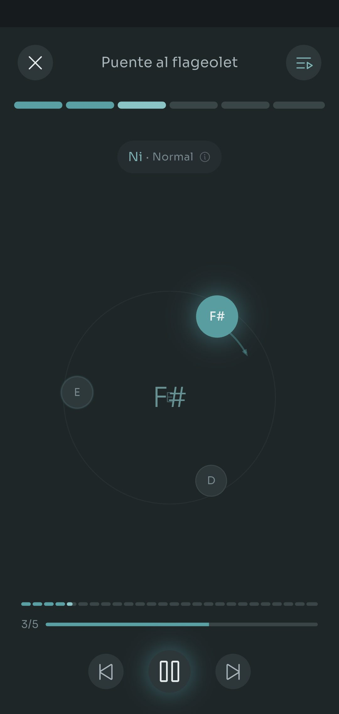
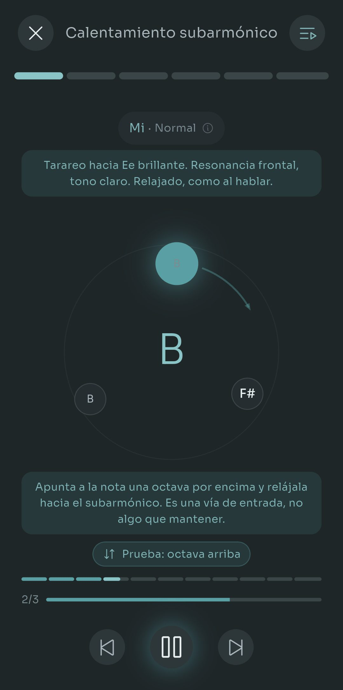
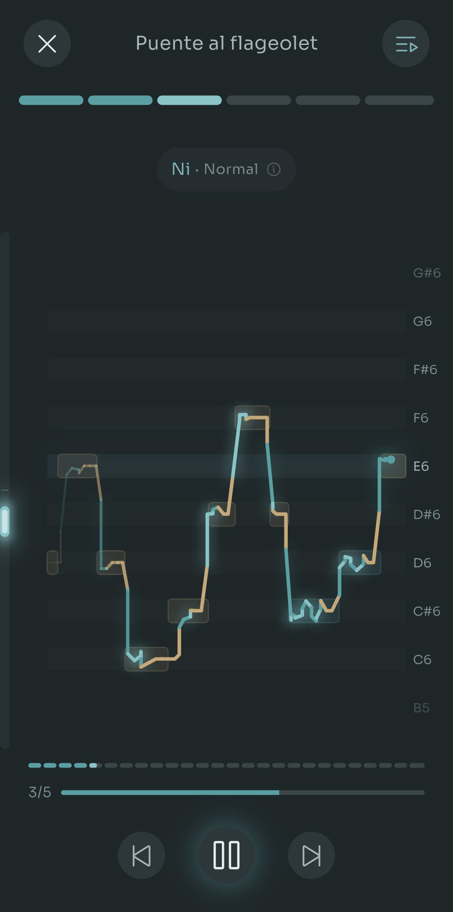
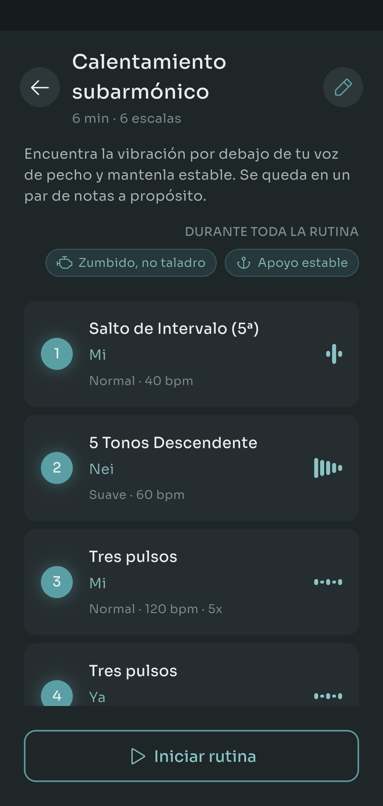
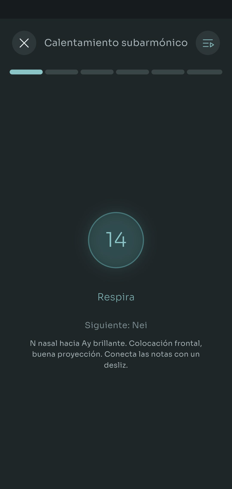

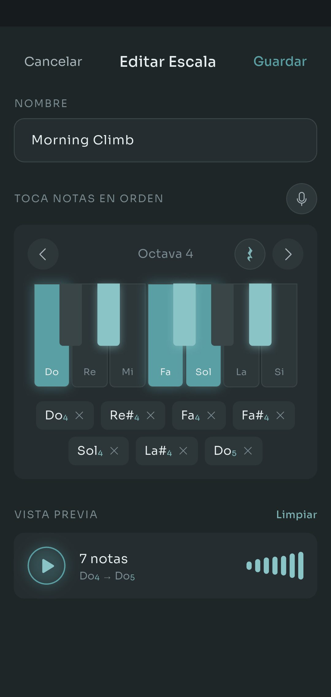
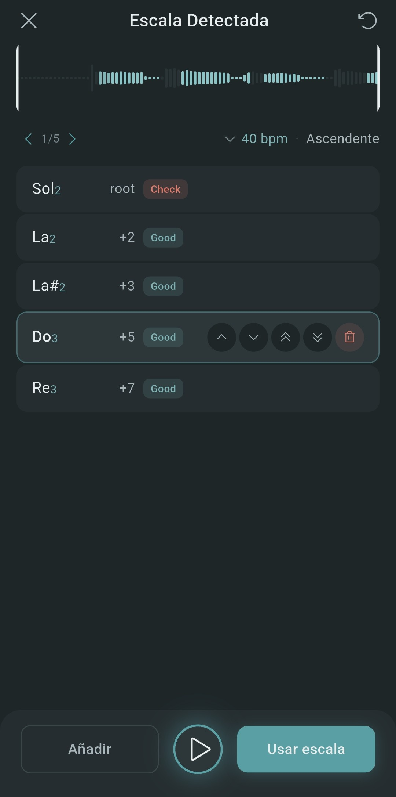
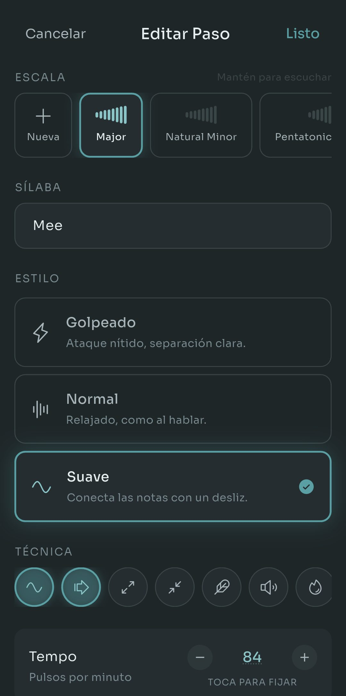
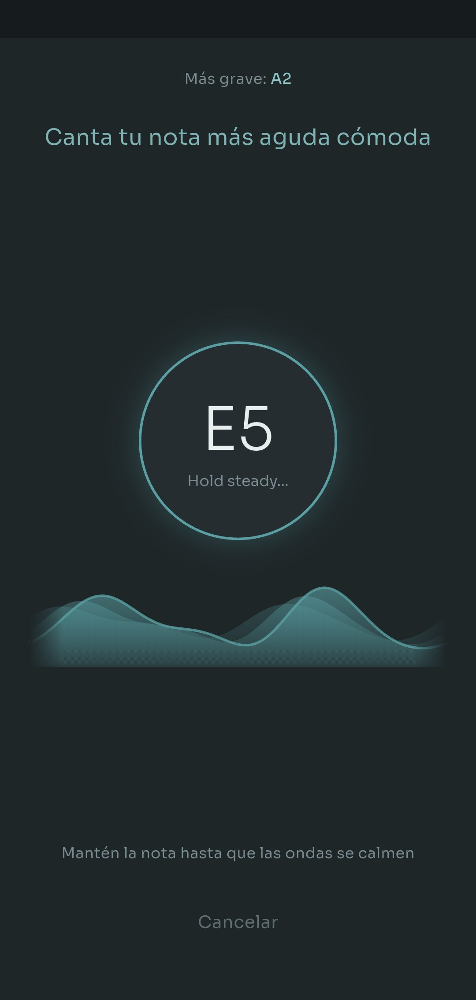
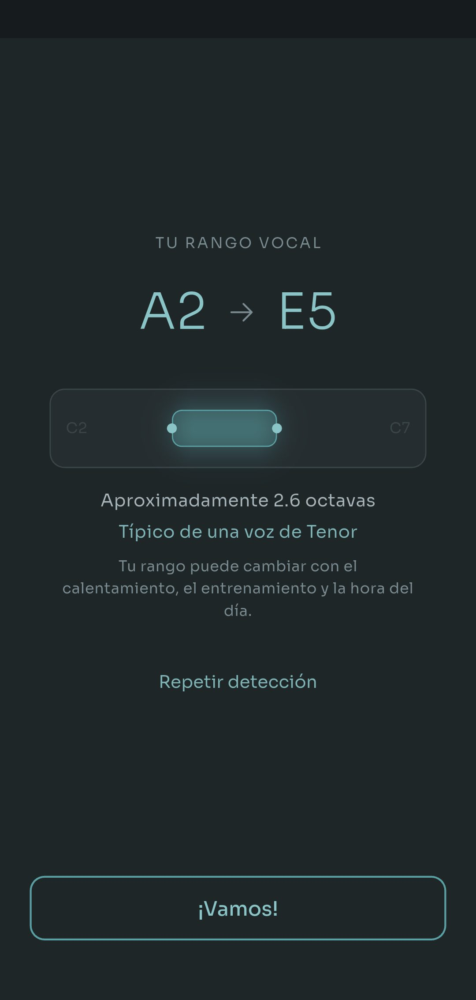
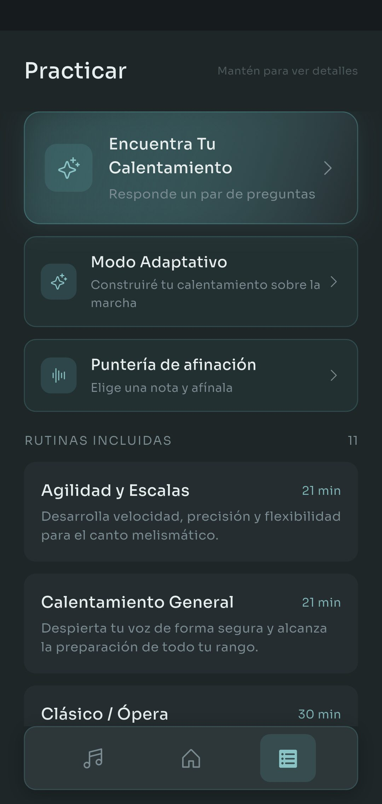